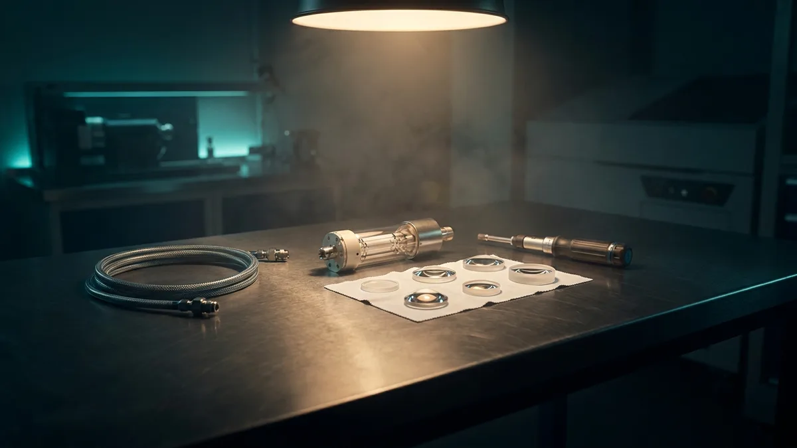

Lazer cihazında arızayı önleyen bakım takvimi
Lazer ve ışık tabanlı cihazlarda arızaların büyük bölümü aniden ortaya çıkmaz; haftalar süren küçük ihmallerin birikmesiyle oluşur. Soğutma devresi, optik yüzeyler ve başlık kontrolü düzenli takip edildiğinde hem beklenmedik duruşlar hem de uygulama tekrarlanabilirliğindeki kayıplar azalır. Bu yazı, salon ve klinik işletmecileri için günlük, haftalık, aylık ve yıllık bakım kalemlerini ve arıza öncesi uyarı işaretlerini derliyor.

Bakım neden takvimle yapılır, arıza çıkınca değil
Lazer ve ışık tabanlı cihazlar tek parça makine değildir. İçlerinde optik hat, soğutma devresi, güç kaynağı, kontrol yazılımı ve sarf niteliğinde parçalar bir arada çalışır. Bu bileşenlerin çoğu ani bozulmaz; performansı yavaşça düşer. Uygulayıcı bunu genelde önce 'cihaz eskisi gibi çalışmıyor' hissiyle fark eder, arıza kodu olarak değil.
Takvimli bakımın mantığı buradadır. Sorun görünür hale gelmeden önce, ölçülebilir kalemleri belirli aralıklarla kontrol edersiniz. Bu yaklaşım hem beklenmedik duruşları azaltır hem de servis çağrıldığında teknisyene geçmiş kayıt sunar. Kaydı olan cihazda teşhis süresi kısalır.
Aşağıdaki takvim, 755 nm ve 808 nm gibi diyot ve alexandrite sistemler, 1064 nm Nd:YAG hatları, pikosaniye platformlar ve fraksiyonel CO2 cihazları için ortak bir çerçeve sunar. Cihaza özel değerler için üretici kullanım kılavuzu esastır; bu yazı kılavuzun yerine geçmez.
Günlük ve haftalık kontroller
Günlük kalemler, uygulamayı yapan kişinin cihazı açtığı anda yaptığı kısa kontrollerdir. Beş dakikayı geçmez ve ayrı bir teknik bilgi gerektirmez. Amaç, o gün içinde ortaya çıkabilecek belirtileri erken görmektir.
Haftalık kontroller ise gün sonunda veya haftanın sabit bir gününde yapılır. Burada temizlik ve gözle muayene ön plandadır. Özellikle başlık camı ve soğutma girişleri, salon ortamındaki toz, saç ve aerosol nedeniyle hızlı kirlenir.
- Günlük: Cihaz açılışında ekranda hata veya uyarı mesajı olup olmadığının kontrolü.
- Günlük: Soğutma suyu seviyesinin gözle kontrolü ve seviye alarmının çalıştığından emin olunması.
- Günlük: Başlık camının veya safir ucun her hasta arasında uygun solüsyonla silinmesi.
- Günlük: Kablo ve fiber hattın gözle kontrolü; keskin kıvrım, ezilme veya sıkışma olmaması.
- Günlük: Ayak pedalı, acil durdurma butonu ve anahtar kilidinin çalıştığının doğrulanması.
- Haftalık: Hava filtresi ve fan ızgaralarının temizliği; cihazın arka ve yan hava boşluklarının açık tutulması.
- Haftalık: Başlık ucunda çizik, yanık izi, çatlak veya kalıntı birikmesi olup olmadığının yakından incelenmesi.
- Haftalık: Soğutma hortumlarında kaçak, nem veya renk değişimi kontrolü.
- Haftalık: Cihaz gövdesi ve tekerlekli sehpanın temizliği; sıvı sıçramasına karşı bağlantı noktalarının kuru tutulması.
Soğutma devresi: en sık atlanan, en pahalıya mal olan kalem
Yüksek güçlü lazerlerde üretilen enerjinin önemli bir kısmı ısıya dönüşür. Bu ısıyı taşıyan devre bozulduğunda cihaz kendini korumak için gücü düşürür veya tamamen durur. Sahada karşılaşılan duruşların kayda değer bir bölümü optik veya elektronik değil, soğutma kaynaklıdır.
Devrede kullanılan su, sıradan çeşme suyu değildir. Deiyonize su gerektiren sistemlerde iletkenliği artmış su, iç yüzeylerde mineral birikmesine ve korozyona yol açar. Bu birikinti ısı transferini düşürür, akış sensörünü yanıltır ve zamanla lazer bar veya kavite tarafında kalıcı hasara giden bir zincir başlatır. Su değişim periyodu üretici tarafından belirlenir ve bu periyot uzatılarak tasarruf edilmez.
Hava akışı ikinci kritik noktadır. Cihazın arka ve alt havalandırma boşlukları duvara, dolaba veya perdeye yaslandığında sistem sıcak havayı dışarı atamaz. Oda sıcaklığının kılavuzda belirtilen aralıkta tutulması, klimanın uygulama odasında değil cihazın çektiği havayı besleyecek şekilde konumlandırılması pratikte ölçülebilir fark yaratır.
Aylık, altı aylık ve yıllık kalemler
Uzun periyotlu bakımlar genellikle yetkili teknik servis veya eğitim almış iç personel tarafından yapılır. Bu kalemlerde cihazın kapağı açılabilir, ölçüm cihazı kullanılabilir veya yazılım tarafında müdahale gerekebilir. Yetkisiz müdahale hem garantiyi hem cihaz güvenliğini etkiler.
Enerji kalibrasyonu bu grubun merkezindedir. Cihazın ekranda gösterdiği enerji yoğunluğu ile başlıktan çıkan gerçek enerji zamanla ayrışabilir. Ölçüm yapılmadığında uygulayıcı, düşen enerjiyi telafi etmek için ayarı yükseltir. Bu, sorunu gizler ve gerçek sapmayı büyütür. Kalibrasyon, ekrandaki değerle çıkışın örtüştüğünü belgelemenin tek yoludur.
Yazılım ve log kontrolü de aynı gruptadır. Modern platformlar atış sayısını, hata kodlarını, sıcaklık eğrilerini ve başlık ömrünü kaydeder. Bu kayıtların düzenli okunması, örneğin sıcaklık alarmlarının sıklaştığını arıza çıkmadan haftalar önce gösterir.
| Periyot | İşlem | Atlanırsa ne olur |
|---|---|---|
| Günlük | Ekran uyarı kontrolü, başlık camı temizliği, su seviyesi bakışı | Kirli optik yüzeyde lokal ısınma ve yanık izi; başlığın erken değişimi |
| Haftalık | Hava filtresi temizliği, hortum ve kablo gözle muayenesi | Isı atımı düşer, sıcaklık alarmı sıklaşır, cihaz gün içinde kendini durdurur |
| Aylık | Soğutma suyu iletkenlik/seviye kontrolü, başlık temas yüzeyi detaylı inceleme | Mineral birikimi ve korozyon başlar; akış sensörü hatalı okuma verir |
| 3-6 aylık | Deiyonize su değişimi, iç filtre değişimi, bağlantı sıkılık kontrolü | Isı transferi kalıcı düşer; lazer kaynağı ve kavite tarafında hasar riski |
| 6-12 aylık | Enerji/çıkış kalibrasyonu, spot homojenlik ölçümü, güvenlik devresi testi | Ekran değeri ile gerçek çıkış ayrışır; uygulama tekrarlanabilirliği kaybolur |
| Yıllık | Yetkili servis genel bakımı, log arşivi incelemesi, yazılım güncellemesi | Küçük sapmalar birikir; planlanmamış duruş ve yedek parça bekleme süresi |
Arıza öncesi uyarı işaretleri
Cihazlar durmadan önce sinyal verir. Bu sinyaller çoğunlukla teknik ekrana değil, uygulama pratiğine yansır. Personelin ne arayacağını bilmesi, servis çağrısının doğru zamanda yapılmasını sağlar.
Aşağıdaki belirtilerden biri görüldüğünde cihazı kullanmaya devam etmek yerine kaydını alın ve teknik desteğe bildirin. Belirtiyi ayar yükselterek telafi etmek, hem cihaza hem uygulama güvenliğine yansıyan bir risktir.
- Aynı ayarda uygulama süresinin uzaması veya uygulayıcının 'eskisi kadar etkili değil' geri bildirimi.
- Sıcaklık alarmının önceden hiç görülmezken haftada birkaç kez ortaya çıkması.
- Spot izinin ciltte homojen olmaması; kenarlarda soluk, merkezde yoğun dağılım.
- Başlık camında silmekle çıkmayan leke, buğu veya nokta izi.
- Soğutma ünitesinden gelen sesin değişmesi, fan gürültüsünün artması.
- Cihazın soğuma için beklediği sürenin uzaması, atışlar arası gecikme.
- Ayak pedalına basıldığında tepkinin gecikmesi veya atışın atlaması.
- Log kayıtlarında tekrar eden, kendiliğinden silinen hata kodları.
Duran gün maliyeti ve bakımın işletmeye getirisi
Bakım kararını teknik değil, işletme tarafından da değerlendirmek gerekir. Bir cihaz durduğunda kayıp yalnızca tamir kalemi değildir. O gün için verilmiş randevular ertelenir, personel boşta kalır, bazı danışanlar seans akışı bozulduğu için geri dönmez. Kampanya döneminde ya da yoğun sezonda bu etki katlanır.
Planlı bakımın avantajı zamanlamayı sizin seçmenizdir. Servis ziyaretini düşük yoğunluklu bir güne alır, gerekli sarf parçayı önceden temin eder, randevu defterini buna göre kurarsınız. Plansız arızada bu esneklik yoktur; parça tedariği ve teknisyen müsaitliği takviminizi belirler.
Pratik bir yöntem, her cihaz için tek sayfalık bir bakım kartı tutmaktır. Kartta tarih, yapılan işlem, atış sayacı değeri ve varsa gözlenen belirti yer alır. Bu kayıt üç işi birden görür: servis teşhisini hızlandırır, garanti ve servis sözleşmesi süreçlerinde belge oluşturur, cihazı ikinci ele devrederken de değerini destekler.
Yeni cihaz alımında bakım tarafı da değerlendirme kriteri olmalıdır. Sarf parçaların tedarik süresi, yetkili servis kapsamı, kalibrasyon periyodu ve kullanıcı seviyesinde yapılabilecek işlemlerin sınırı, teklif aşamasında sorulması gereken başlıklardır.
Özetle
Bakım takvimi, karmaşık bir teknik program değil; kim, ne zaman, neyi kontrol edecek sorusunun yazılı cevabıdır. Günlük beş dakikalık kontroller optik ve başlık ömrünü korur, haftalık temizlik ısı atımını sürdürür, periyodik servis ve kalibrasyon ise ekrandaki değerle gerçek çıkışın örtüşmesini güvence altına alır. Uyarı işaretlerini ayar yükselterek telafi etmemek, bu zincirin en kritik halkasıdır. Cihazınıza özel bakım periyotları ve sarf parça listesi için üretici kullanım kılavuzunu esas alın; portföyümüzdeki sistemlerin bakım kapsamı, servis koşulları ve kullanıcı seviyesinde yapılabilecek işlemlerin sınırı hakkında teknik ekibimizden ayrıntılı bilgi alabilirsiniz.
Sık sorulanlar
Soğutma suyunu ne sıklıkla değiştirmeliyim?
Enerji kalibrasyonunu kendim yapabilir miyim?
Cihazımda sıcaklık alarmı veriyor, kullanmaya devam edebilir miyim?
Bakım kaydı tutmak gerçekten gerekli mi?
İlgili platformlar
Yazıda anlatılan teknik kalemleri gerçek cihazlar üzerinde görün.

Arion Alexandrite Lazer
755 nm AlexandriteTek platformda epilasyon, vasküler ve pigmente lezyon tedavisi; opsiyonel başlıklarla tedavi menüsünü genişletir.

Epizone Mix Diode Lazer
3300 W GüçEn çok kullanılan üç dalga boyu tek başlıkta; 12 inç dokunmatik arayüzle operatör eğitimi kısalır.

Cotra Plus CO2
10.600 nm · 50 WCerrahi, zoom, fraksiyonel ve kozmetik modlarıyla tek cihazda dört ayrı tedavi hattı açar.
Bu yazıdaki hesabı kendi işletmeniz için yapalım
Cihaz seçimi, servis kapsamı ve yatırım geri dönüşü — kendi rakamlarınızla oturup konuşalım.
Ankara ve İstanbul ofislerimizden aynı gün dönüş yapılır.